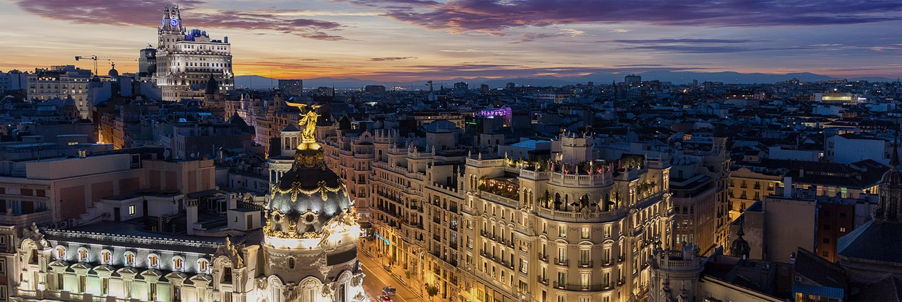

<DOCTYPE.html>
	<html lang="es">
	<head>
		<link rel="STYLESHEET" type="text/css" href="mariaOrtizNuero_P2.css">
		<meta charset="utf-8" />
		<title>Visitas Madrid Capital</title>
	<head>
	
	<body>
		<header> <h1 id="madrid"> VISITA MADRID CAPITAL</h1></header>
		
		<nav class="menu">
			<ul>
				<li><a href="#sitios">SITIOS EMBLEMÁTICOS</a></li>
				<li><a href="#museos">MUSEOS</a></li>
				<li><a href="#zoo">ZOOS</a></li>
				<li><a href="#parques">PARQUES DE ATRACCIONES</a></li>
				<li><a href="contacto.html">CONTÁCTANOS</a></li>
			</ul>
		
		</nav>
		
		
		
		<div id="introduccion" class="introduccion">
			<h1>PEQUEÑA INTRODUCCIÓN A LA CIUDAD</h1>
			<a> Madrid, capital de España, está situada en el centro del país, posee más de cinco millones de habitantes (en 2007) y es la ciudad más grande de España y la tercera gran área urbana de la Unión Europea.
			    Madrid tiene varios símbolos que la representan como su bandera de color rojo carmesí que tiene en el centro siete estrellas de cinco puntas blancas situadas en dos filas y distribuidas cuatro arriba y cuatro abajo. Estas estrellas representan a las estrellas de la constelación de la Osa Menor y son estrellas de cinco puntas debido a las cinco provincias que rodean a la capital que son Segovia, Guadalajara, Ávila, Toledo y Cuenca.
				Otro elemento que representa a Madrid es el oso y el madroño que es una estatua situada en la Puerta del Sol y está grabado en el escudo de la ciudad y es un oso apoyado en un madroño rodeado de siete estrellas blancas sobre un fondo azul y encima posee una corona real antigua.
				Esta ciudad ha crecido mucho durante toda su historia y se han ido anexionando los pueblos de alrededor a ella como por ejemplo Aravaca, Barajas, Canillas, Fuencarral, Hortaleza, Carabanchel Alto y Bajo... que se anexionaron en 1948. Además de los barrios mencionados anteriormente, uniendo los pueblos de alrededor del centro como Pozuelo de Alarcón, Boadilla del Monte, Las Rozas, Torrejón de Ardoz, Pinto, Parla forman la Comunidad de Madrid que tiene una gran extensión ya que incluye incluso hasta Aranjuez. En conclusión Madrid ofrece muchos lugares con encanto muy atractivos para el millón de turistas que la visitan todos los años.
			</a>
		</div>
		
		<div id="sitios" class="sitios">
			<h1>SITIOS PARA VISITAR</h1>
			<div class="cuadrado">
				<h2>La Puerta del Sol</h2>
				
			</div>
			
			<div class="cuadrado">
				<h2>El Palacio Real</h2>
				
			</div>
			
			<div class="cuadrado">
				<h2>La Plaza Mayor</h2>
				
			</div>
			
			<div class="cuadrado">
				<h2>El Retiro</h2>
				
				
			</div>
			
			<div class="cuadrado">
				<h2>La Gran Via</h2>
				
			</div>
			
			
		</div>
		
		<div id="museos" class="museos">
			<h1>MUSEOS QUE VER</h1>
			<div class="cuadrado">
				<h2>Museo del Prado</h2>
				
			</div>
			
			<div class="cuadrado">
				<h2>La Gran Via</h2>
				
			</div>
			
			<div class="cuadrado">
				<h2>La Gran Via</h2>
				
			</div>
			
		</div>
		
		<div id="zoo" class="zoo">
			<h1>ZOOS</h1>
			<div class="cuadrado">
				<h2>Faunia</h2>
				
			</div>
			
			<div class="cuadrado">
				<h2>Zoo Aquarium</h2>
				
			</div>
			
		</div>
		
		<div id="parques" class="parques">
			<h1>PARQUES DE ATRACCIONES</h1>
			<div class="cuadrado">
				<h2>Parque Warner</h2>
				
			</div>
			
			<div class="cuadrado">
				<h2>Parque de Atracciones Madrid</h2>
				
			</div>
		</div>

	
	</body>

	</html>


